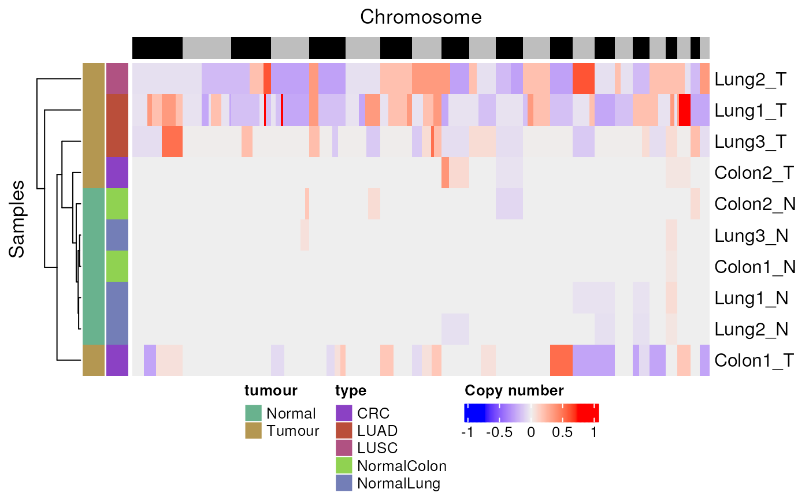
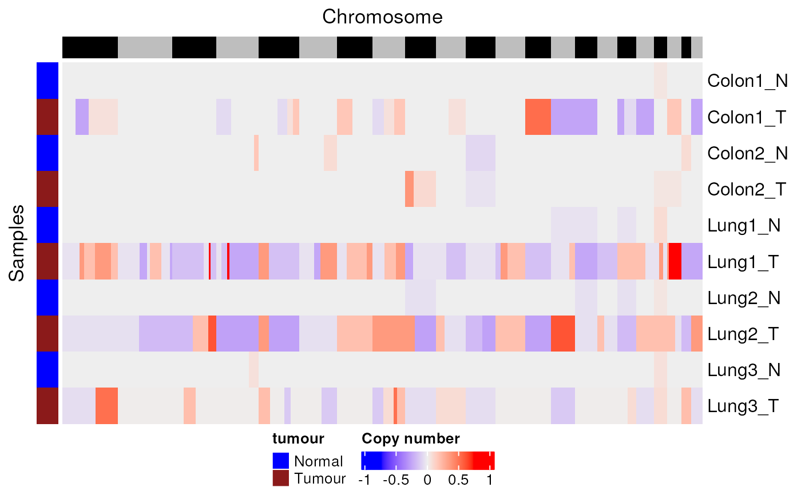

Plot per-window copy-number estimates stored in a qseaSet as a heatmap
using ComplexHeatmap. Each column is a sample; rows are genome windows.
plotCNVheatmap(
qseaSet,
sampleAnnotation = NULL,
annotationColors = NA,
clusterRows = TRUE
)qseaSet.
Input object containing per-window CNV tracks (e.g., created by
addHMMcopyCNV() or qsea::addCNV()).
tidyselect specification, character(), or NULL.
Sample-table columns to display as column annotations (e.g., c("tumour","type")
or bare helpers tumour, type).
Default: NULL.
list or NA.
Optional mapping of levels → colours to override auto palettes, e.g.
list(tumour = c(Tumour = "firebrick4", Normal = "blue")).
Default: NA.
logical(1).
Cluster rows (windows) before plotting.
Default: TRUE.
Draws a heatmap on the active device and (invisibly) returns the underlying
ComplexHeatmap object for further composition with
ComplexHeatmap::draw().
Assumes CNV values are available per window and sample. Rows are windows
(typically in genomic order if clusterRows = FALSE), columns are samples.
Sample annotations (and optional colours) are added when sampleAnnotation
and annotationColors are provided.
addHMMcopyCNV(), runHMMcopy(), ComplexHeatmap::Heatmap(),
qsea::addCNV()
Other CNV:
addHMMcopyCNV(),
removeCNV(),
runHMMCopy()
data(exampleTumourNormal, package = "mesa")
# Basic CNV heatmap with sample annotations
exampleTumourNormal %>%
plotCNVheatmap(sampleAnnotation = c(tumour, type))

# Custom annotation colours; disable row clustering
exampleTumourNormal %>%
plotCNVheatmap(
sampleAnnotation = tumour,
annotationColors = list(tumour = c(Tumour = "firebrick4", Normal = "blue")),
clusterRows = FALSE
)
